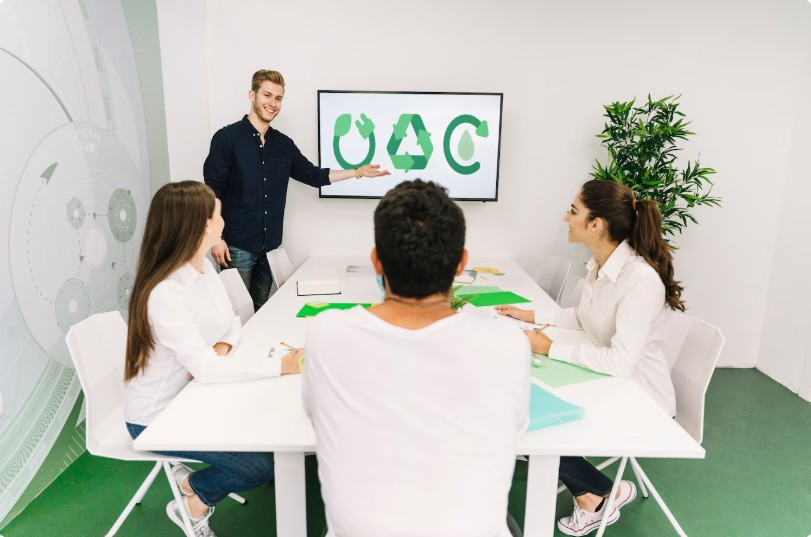

2. Economía verde y circular aplicada a nuestro sector productivo
La economía verde y circular se han convertido en ejes fundamentales para el futuro del desarrollo económico y tecnológico. En el sector de la informática y las telecomunicaciones, donde el avance tecnológico es constante y el consumo de recursos es elevado, aplicar estos modelos es esencial para alcanzar un equilibrio entre innovación, rentabilidad y sostenibilidad.
Este capítulo profundiza en cómo estos modelos se integran en nuestro sector productivo, partiendo de sus fundamentos teóricos hasta su aplicación concreta en productos y procesos. En un contexto donde la obsolescencia tecnológica y el consumo masivo generan toneladas de residuos electrónicos y un alto consumo energético, es vital reflexionar sobre cómo repensar el diseño, el uso y la gestión del ciclo de vida de nuestros dispositivos y sistemas.
La economía verde apuesta por una producción más limpia, energías renovables, y eficiencia en el uso de los recursos, mientras que la economía circular propone que los productos y materiales permanezcan en uso el mayor tiempo posible, reduciendo así la generación de residuos.
A través de los siguientes apartados, se abordarán los principios fundamentales de ambas economías, su aplicación práctica en hardware y software, y una comparativa entre el modelo de producción tradicional y el sostenible. Esto permitirá comprender cómo nuestro sector puede y debe adaptarse a las exigencias medioambientales actuales, sin perder competitividad ni capacidad de innovación.
